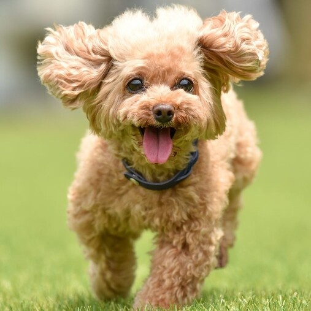

푸들 Poodle
곱슬곱슬한 털이 특징인 북부 독일 출신의 소형견 입니다. 프랑스인들이 특히나 좋아하는 강아지이며 프랑스의 국견으로 까지 불리고 있습니다.
곱슬곱슬한 털이 특징인 북부 독일 출신의 소형견 입니다. 프랑스인들이 특히나 좋아하는 강아지이며 프랑스의 국견으로 까지 불리고 있습니다.
토이푸들부터 미니어처, 미디엄, 스탠다드까지 여러 크기가 있는 종입니다. 토이푸들의 체고(어깨높이)는 25cm 이하에 몸무게는 2~3kg이고, 미니어처푸들의 체고는 25~35cm에 몸무게는 3~6kg에다, 미디엄 푸들은 35~45cm에, 몸무게는 6~20kg정도이며, 스탠다드푸들의 체고는 38cm 이상에, 몸무게는 20~27kg입니다.
털이 길고 양털 모양으로 자랍니다. 또한 털이 거의 빠지지 않아 강아지 털 알레르기에서 자유롭습니다. 강아지 알레르기는 털을 통해 전해지는 각질이나 기타 물질들로 인해 발생하지만, 푸들은 털이 잘 빠지지 않아 알레르기가 있는 사람도 수월히 기를 수 있는 품종입니다.
개 지능이 탑2 안에 들 정도로 뛰어납니다. 때문에 훈련이 매우 용이해 훈련만 잘 시키면 다른 품종의 애완견보다 몇 배는 더 많은 개인기를 훈련 시킬 수 있습니다. 대소변을 제대로 못 가리거나 이 갈이 할 때 짖거나 물거나 하는 등 문제 행동도 다른 견종에 비해 매우 양호한 편입니다.
좋아하는 활동을 할 때는 활발하다 못해 지나칠 정도로 발랄한 모습을 보이는 등 순간적인 활동량이 격렬하며, 전체적인 운동 요구도도 크기에 비해서는 큰 편입니다.
평균수명은 긴 편입니다. 일본의 조사에 따르면 토이푸들의 경우 평균 수명이 14.7세로 상위 3등을 기록했고 심지어 스탠다드푸들의 경우도 평균 13년 정도로 대형견 중에서 최상위권의 수명을 갖습니다.
반응성과 리액션, 운동성이 매우 뛰어난 성격이라 작은 자극에도 설레발과 같은 큰 반응을 보이는 경향이 있습니다.
다른 강아지뿐 아니라 고양이처럼 아예 종류가 다른 반려동물과의 친화력도 거의 최상급으로 좋은 것도 반려동물을 여럿 키우는 가정에서는 큰 장점으로 기본적인 공격성이 낮고, 대체로 친밀한 성격입니다.
털이 자주 엉키기 때문에 하루에 1회 이상 빗질은 필수이며,특히 무더운 여름날이면 꼬인 털 때문에 피부에 염증이 생기기도 쉽습니다. 털이 빨리 자라기 때문에 미용도 자주 해주어야 합니다.
푸들은 기본적으로 타 견종에 비해 유전 병이나 고질병이 그리 많지 않는 건강한 견종에 속하지만 요즘 펫숍에서 푸들은 유독 어린 강아지들을 분양하고 있는 경우가 많기 때문에 분양 직후 질병에 취약한 경우가 많습니다. 따라서 푸들을 입양하는 견주들은 특히 어린 시절에 주의해서 관리할 필요가 있습니다.
푸들은 분리불안이 심해 생후 3~5개월 집에 나갔다 들어올 때 귀엽다고 격하게 반겨주는 것은 주의할 필요가 있습니다. 이렇게 되면 푸들은 주인에 대한 애착이 더욱 심해져서 성견이 되면 집에 가족이 없을때 분리불안은 일상이 불가능할 정도로 심해집니다.
몸이 길고 늘씬하기 때문에 척추와 무릎에 문제가 생길 수 있습니다. 그렇기 때문에 동물병원에 데려가서 정기적으로 검사를 해 주는 게 좋습니다. 허리에 염증이 생겼을 때 방치해두면 하반신 불수가 되거나 사망하기도 하니 주의해야 합니다.